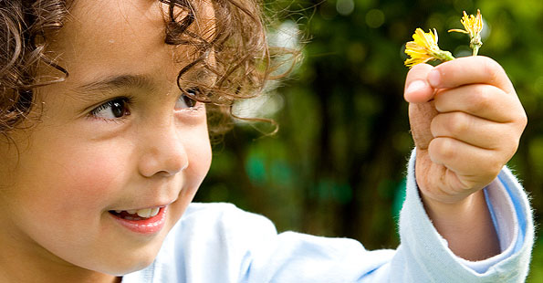
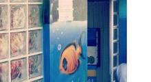

More Website Templates @ TemplateMonster.com - December 16, 2013!
-

Você
-

Pode
-

Ajudar
Contribua
Nós podemos mudar a vida daqueles que não têm esperança
O trabalho voluntário é uma oportunidade para fazer amigos, viver novas experiências, conhecer outras realidades, desenvolver talentos e habilidades, ser solidário e cidadão. Uma contribuição para a construção de um mundo melhor.
Voluntário é o cidadão que, motivado pelos valores de participação e solidariedade, doa seu tempo, trabalho e talento, de maneira espontânea e não remunerada, para causas de interesse social e comunitário.Agenda
Nossa página
Você pode ajudá-los
Histórias de sucesso
Artesanatos, games, gincanas, artes, músicas. Tudo isso contribui para muitas histórias de sucesso no nosso pequeno projeto.
Sobre Nós
O Projeto Beira Rio é uma entidade sem fins lucrativos, em prol das crianças e adolescentes da Fazenda da Juta, Zona Leste - SP.